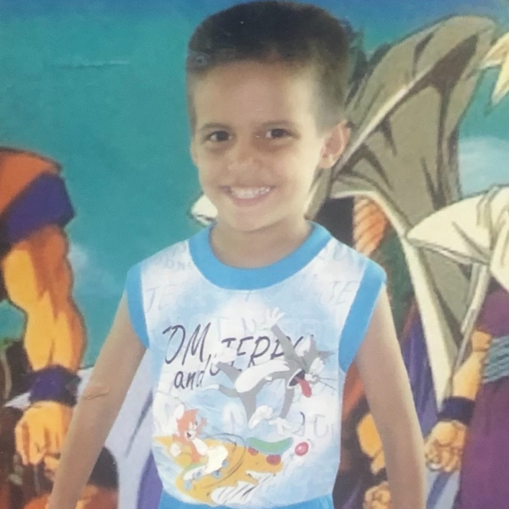

How did I get Here?
- I am originally from Havana Cuba. I migrated with my parents to the United States in 2007 with no more than a bookbag. I didn't speak fluent English, but I learned fast.
- My tech journey started in Middle School. I built my first video game when I was 12 years old! It was called Mortal Kombat VS Street Fighter. I also took two Honors IT classes, and saw that IT related subjects really caught my attention.
- My freshman year of High School, I created made my own Youtube Channel! I also took an Adobe Photoshop class that year out of curiosity. I loved it so much that ended up taking an IT class for every subsequent year of High School! These included Graphic Design, and Video Production classes.
- After I graduated, I continued my studies at UCF because it is a good school and it is close to home. My major used to be in Computer Science. I realized though, that it requires lots of math! I therefore, wanted to find an IT related career where not too much mas was needed. I switched to a Digital Media major with a Game Design track!
- My sophmore year of college, I had a cousin teach me how to build a website just for fun. I started to build websites for my family and then for small local businesses. I realized that I liked building websites more than I did games. Which brought me to my current state as a Junior UCF student with a Web Design track.
(1)

I migrated from Cuba in 2007.
(2)
At the age of 12, I took on Game Design.
(3)
Two years later, I created my own Youtube channel.
(4)
I started Graphic Design in High School.
(5)
After graduating High School, I began to study Web Design in
college.
(6)

Finally, this is UCF junior me!